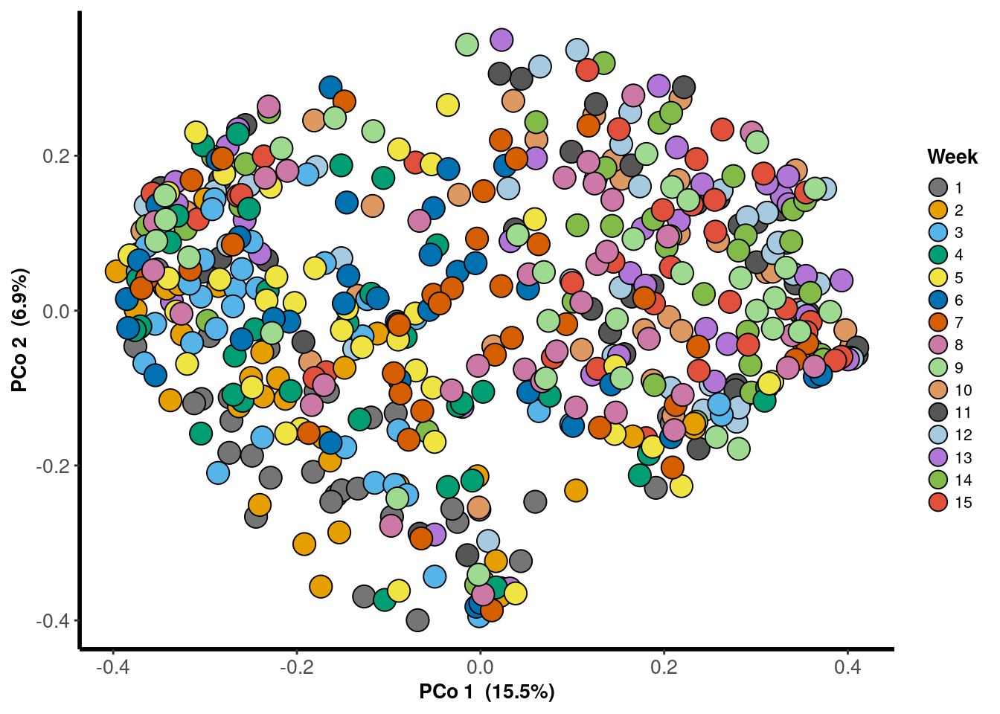
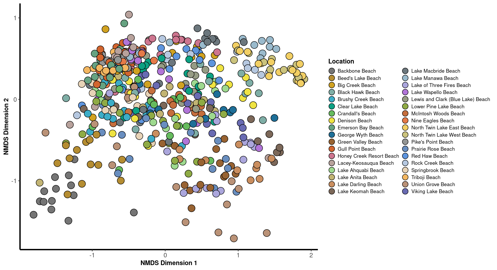
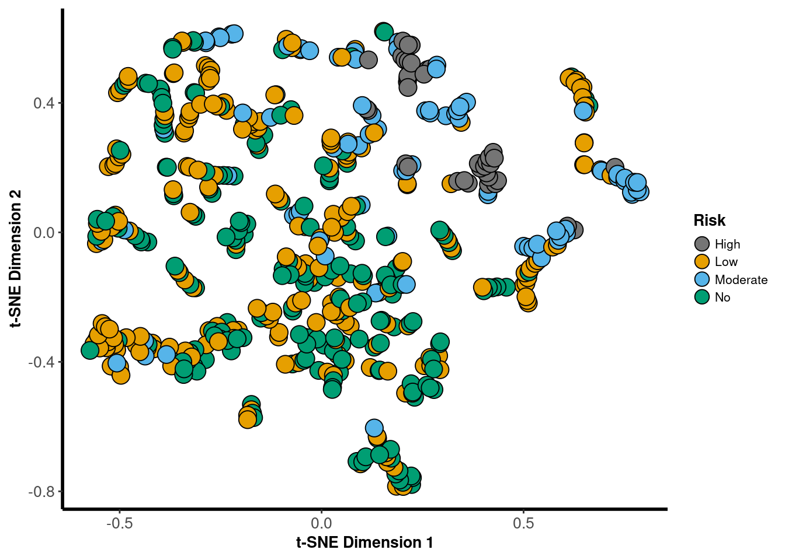

All Samples
Ordination
2018
PCoA
Lake
phylosmith::pcoa_phyloseq(phylosmith::taxa_filter(lake_po, treatment = "Year", subset = "2018"), "Location", circle = FALSE)
Week
phylosmith::pcoa_phyloseq(phylosmith::taxa_filter(lake_po, treatment = "Year", subset = "2018"), "Week", circle = FALSE)
Risk Level
phylosmith::pcoa_phyloseq(phylosmith::taxa_filter(lake_po, treatment = "Year", subset = "2018"), "Risk", circle = FALSE)
NMDS
Lake
nmds <- phylosmith::nmds_phyloseq(phylosmith::taxa_filter(lake_po, treatment = "Year", subset = "2018"), "Location", circle = FALSE)## Run 0 stress 0.1393965
## Run 1 stress 0.1398331
## ... Procrustes: rmse 0.02555364 max resid 0.1112875
## Run 2 stress 0.1403284
## Run 3 stress 0.1392105
## ... New best solution
## ... Procrustes: rmse 0.02682761 max resid 0.1101018
## Run 4 stress 0.140865
## Run 5 stress 0.1416363
## Run 6 stress 0.1418019
## Run 7 stress 0.1405055
## Run 8 stress 0.1411806
## Run 9 stress 0.1411152
## Run 10 stress 0.1404088
## Run 11 stress 0.1400349
## Run 12 stress 0.1390551
## ... New best solution
## ... Procrustes: rmse 0.003772077 max resid 0.04741309
## Run 13 stress 0.143058
## Run 14 stress 0.1411499
## Run 15 stress 0.1398941
## Run 16 stress 0.1407491
## Run 17 stress 0.1410781
## Run 18 stress 0.1399551
## Run 19 stress 0.1417259
## Run 20 stress 0.1407233
## Run 21 stress 0.1407663
## Run 22 stress 0.1392084
## ... Procrustes: rmse 0.003796097 max resid 0.04675711
## Run 23 stress 0.1398254
## Run 24 stress 0.139484
## ... Procrustes: rmse 0.005052784 max resid 0.08109976
## Run 25 stress 0.1417852
## Run 26 stress 0.1414197
## Run 27 stress 0.1389638
## ... New best solution
## ... Procrustes: rmse 0.002358033 max resid 0.04621079
## Run 28 stress 0.1413823
## Run 29 stress 0.1424079
## Run 30 stress 0.1417739
## Run 31 stress 0.1404716
## Run 32 stress 0.1426406
## Run 33 stress 0.1407669
## Run 34 stress 0.1414854
## Run 35 stress 0.1422808
## Run 36 stress 0.1389933
## ... Procrustes: rmse 0.003399188 max resid 0.04719818
## Run 37 stress 0.1397432
## Run 38 stress 0.1412152
## Run 39 stress 0.1392059
## ... Procrustes: rmse 0.004232367 max resid 0.04654028
## Run 40 stress 0.1399177
## Run 41 stress 0.140658
## Run 42 stress 0.1407634
## Run 43 stress 0.1405988
## Run 44 stress 0.1396391
## Run 45 stress 0.1413392
## Run 46 stress 0.1429663
## Run 47 stress 0.1414466
## Run 48 stress 0.1410592
## Run 49 stress 0.1416487
## Run 50 stress 0.1395546
## Run 51 stress 0.140663
## Run 52 stress 0.1401136
## Run 53 stress 0.1390161
## ... Procrustes: rmse 0.003154651 max resid 0.04580177
## Run 54 stress 0.1417163
## Run 55 stress 0.1407358
## Run 56 stress 0.1412667
## Run 57 stress 0.1395779
## Run 58 stress 0.1416698
## Run 59 stress 0.1399921
## Run 60 stress 0.1404287
## Run 61 stress 0.141743
## Run 62 stress 0.1412369
## Run 63 stress 0.1391396
## ... Procrustes: rmse 0.002789885 max resid 0.03833028
## Run 64 stress 0.1426773
## Run 65 stress 0.1422948
## Run 66 stress 0.1401116
## Run 67 stress 0.1414727
## Run 68 stress 0.1391563
## ... Procrustes: rmse 0.002746822 max resid 0.03822767
## Run 69 stress 0.138984
## ... Procrustes: rmse 0.002825539 max resid 0.04690727
## Run 70 stress 0.1400767
## Run 71 stress 0.1423444
## Run 72 stress 0.1413379
## Run 73 stress 0.1418484
## Run 74 stress 0.1427368
## Run 75 stress 0.1404386
## Run 76 stress 0.1393142
## ... Procrustes: rmse 0.003939902 max resid 0.04555354
## Run 77 stress 0.1402262
## Run 78 stress 0.1399555
## Run 79 stress 0.1391517
## ... Procrustes: rmse 0.003841315 max resid 0.04706029
## Run 80 stress 0.1404561
## Run 81 stress 0.1404325
## Run 82 stress 0.1401342
## Run 83 stress 0.141134
## Run 84 stress 0.1411798
## Run 85 stress 0.1412702
## Run 86 stress 0.1390149
## ... Procrustes: rmse 0.003544971 max resid 0.04666878
## Run 87 stress 0.1415003
## Run 88 stress 0.1400512
## Run 89 stress 0.1389848
## ... Procrustes: rmse 0.003603875 max resid 0.04741237
## Run 90 stress 0.1399661
## Run 91 stress 0.1416963
## Run 92 stress 0.1412914
## Run 93 stress 0.1402101
## Run 94 stress 0.1416274
## Run 95 stress 0.1419915
## Run 96 stress 0.1414501
## Run 97 stress 0.1411355
## Run 98 stress 0.1401239
## Run 99 stress 0.1402618
## Run 100 stress 0.1389901
## ... Procrustes: rmse 0.003805658 max resid 0.04755983
## *** No convergence -- monoMDS stopping criteria:
## 44: no. of iterations >= maxit
## 45: stress ratio > sratmax
## 11: scale factor of the gradient < sfgrminnmds
Week
nmds <- phylosmith::nmds_phyloseq(phylosmith::taxa_filter(lake_po, treatment = "Year", subset = "2018"), "Week", circle = FALSE)## Run 0 stress 0.1393965
## Run 1 stress 0.1412539
## Run 2 stress 0.1428037
## Run 3 stress 0.1391939
## ... New best solution
## ... Procrustes: rmse 0.02589017 max resid 0.1093293
## Run 4 stress 0.1402996
## Run 5 stress 0.1404912
## Run 6 stress 0.1403653
## Run 7 stress 0.140482
## Run 8 stress 0.1449001
## Run 9 stress 0.1412655
## Run 10 stress 0.1390284
## ... New best solution
## ... Procrustes: rmse 0.00360399 max resid 0.04217317
## Run 11 stress 0.1410581
## Run 12 stress 0.1397898
## Run 13 stress 0.1411736
## Run 14 stress 0.1431087
## Run 15 stress 0.1415128
## Run 16 stress 0.1406669
## Run 17 stress 0.1413385
## Run 18 stress 0.1397246
## Run 19 stress 0.1416533
## Run 20 stress 0.1419466
## Run 21 stress 0.1409147
## Run 22 stress 0.1395622
## Run 23 stress 0.1405362
## Run 24 stress 0.1412612
## Run 25 stress 0.1418111
## Run 26 stress 0.1406755
## Run 27 stress 0.1403144
## Run 28 stress 0.1422398
## Run 29 stress 0.1390845
## ... Procrustes: rmse 0.002315223 max resid 0.0331329
## Run 30 stress 0.1401978
## Run 31 stress 0.141716
## Run 32 stress 0.1403169
## Run 33 stress 0.1404921
## Run 34 stress 0.1406158
## Run 35 stress 0.1406294
## Run 36 stress 0.1399387
## Run 37 stress 0.141167
## Run 38 stress 0.1400811
## Run 39 stress 0.140272
## Run 40 stress 0.1414621
## Run 41 stress 0.1403766
## Run 42 stress 0.1410541
## Run 43 stress 0.139439
## ... Procrustes: rmse 0.02715388 max resid 0.114405
## Run 44 stress 0.139182
## ... Procrustes: rmse 0.003524055 max resid 0.04662843
## Run 45 stress 0.1410598
## Run 46 stress 0.1403799
## Run 47 stress 0.142085
## Run 48 stress 0.1402659
## Run 49 stress 0.1402771
## Run 50 stress 0.1430482
## Run 51 stress 0.1409751
## Run 52 stress 0.1407488
## Run 53 stress 0.141035
## Run 54 stress 0.140003
## Run 55 stress 0.1403445
## Run 56 stress 0.1423483
## Run 57 stress 0.139652
## Run 58 stress 0.1409707
## Run 59 stress 0.14157
## Run 60 stress 0.1410489
## Run 61 stress 0.1401712
## Run 62 stress 0.1390178
## ... New best solution
## ... Procrustes: rmse 0.003515899 max resid 0.04171313
## Run 63 stress 0.1392385
## ... Procrustes: rmse 0.003638198 max resid 0.04810964
## Run 64 stress 0.1423122
## Run 65 stress 0.141864
## Run 66 stress 0.1417376
## Run 67 stress 0.1409601
## Run 68 stress 0.1416686
## Run 69 stress 0.1395591
## Run 70 stress 0.140113
## Run 71 stress 0.1397087
## Run 72 stress 0.1409031
## Run 73 stress 0.1420326
## Run 74 stress 0.1412656
## Run 75 stress 0.1403459
## Run 76 stress 0.1413774
## Run 77 stress 0.14062
## Run 78 stress 0.1409174
## Run 79 stress 0.1396286
## Run 80 stress 0.1416564
## Run 81 stress 0.1425551
## Run 82 stress 0.1414633
## Run 83 stress 0.1422059
## Run 84 stress 0.1406375
## Run 85 stress 0.1449562
## Run 86 stress 0.1411502
## Run 87 stress 0.1424762
## Run 88 stress 0.1390722
## ... Procrustes: rmse 0.002901087 max resid 0.03901993
## Run 89 stress 0.1408394
## Run 90 stress 0.1416997
## Run 91 stress 0.1396296
## Run 92 stress 0.1391972
## ... Procrustes: rmse 0.003749865 max resid 0.04196664
## Run 93 stress 0.1402056
## Run 94 stress 0.1410118
## Run 95 stress 0.1411064
## Run 96 stress 0.1401174
## Run 97 stress 0.1412566
## Run 98 stress 0.1408048
## Run 99 stress 0.1402223
## Run 100 stress 0.1416624
## *** No convergence -- monoMDS stopping criteria:
## 45: no. of iterations >= maxit
## 45: stress ratio > sratmax
## 10: scale factor of the gradient < sfgrminnmds
Risk Level
nmds <- phylosmith::nmds_phyloseq(phylosmith::taxa_filter(lake_po, treatment = "Year", subset = "2018"), "Risk", circle = FALSE)## Run 0 stress 0.1393965
## Run 1 stress 0.1409579
## Run 2 stress 0.1418586
## Run 3 stress 0.1413652
## Run 4 stress 0.1411033
## Run 5 stress 0.1416194
## Run 6 stress 0.1396993
## ... Procrustes: rmse 0.02611647 max resid 0.1108218
## Run 7 stress 0.1395927
## ... Procrustes: rmse 0.02680178 max resid 0.1104663
## Run 8 stress 0.1422965
## Run 9 stress 0.1389635
## ... New best solution
## ... Procrustes: rmse 0.02691546 max resid 0.110028
## Run 10 stress 0.1412937
## Run 11 stress 0.1433159
## Run 12 stress 0.1405404
## Run 13 stress 0.14197
## Run 14 stress 0.1418118
## Run 15 stress 0.1397066
## Run 16 stress 0.1401611
## Run 17 stress 0.1391573
## ... Procrustes: rmse 0.002702578 max resid 0.04120391
## Run 18 stress 0.1408895
## Run 19 stress 0.1415992
## Run 20 stress 0.1394116
## ... Procrustes: rmse 0.02730036 max resid 0.1140482
## Run 21 stress 0.1433461
## Run 22 stress 0.1395775
## Run 23 stress 0.1408217
## Run 24 stress 0.1404055
## Run 25 stress 0.1413254
## Run 26 stress 0.140823
## Run 27 stress 0.1415486
## Run 28 stress 0.1394641
## Run 29 stress 0.1413315
## Run 30 stress 0.1423192
## Run 31 stress 0.1414953
## Run 32 stress 0.1389783
## ... Procrustes: rmse 0.003168496 max resid 0.04707657
## Run 33 stress 0.1413568
## Run 34 stress 0.1411921
## Run 35 stress 0.1401879
## Run 36 stress 0.1413102
## Run 37 stress 0.1397076
## Run 38 stress 0.1405219
## Run 39 stress 0.1404414
## Run 40 stress 0.1406587
## Run 41 stress 0.1411308
## Run 42 stress 0.1403226
## Run 43 stress 0.1397734
## Run 44 stress 0.1429863
## Run 45 stress 0.1389511
## ... New best solution
## ... Procrustes: rmse 0.001130155 max resid 0.02074161
## Run 46 stress 0.1429056
## Run 47 stress 0.1399205
## Run 48 stress 0.1415338
## Run 49 stress 0.1399506
## Run 50 stress 0.1395556
## Run 51 stress 0.1413409
## Run 52 stress 0.1426736
## Run 53 stress 0.1403954
## Run 54 stress 0.1408219
## Run 55 stress 0.1409778
## Run 56 stress 0.1407667
## Run 57 stress 0.14231
## Run 58 stress 0.1447889
## Run 59 stress 0.1420604
## Run 60 stress 0.1394418
## ... Procrustes: rmse 0.02693885 max resid 0.110719
## Run 61 stress 0.1401047
## Run 62 stress 0.1463106
## Run 63 stress 0.1402382
## Run 64 stress 0.1412588
## Run 65 stress 0.14135
## Run 66 stress 0.1410125
## Run 67 stress 0.1411918
## Run 68 stress 0.1426594
## Run 69 stress 0.1398943
## Run 70 stress 0.1427716
## Run 71 stress 0.1396502
## Run 72 stress 0.1411865
## Run 73 stress 0.141298
## Run 74 stress 0.1424
## Run 75 stress 0.1390385
## ... Procrustes: rmse 0.002421445 max resid 0.04169224
## Run 76 stress 0.1414961
## Run 77 stress 0.1399163
## Run 78 stress 0.1414823
## Run 79 stress 0.1409518
## Run 80 stress 0.1414446
## Run 81 stress 0.1414853
## Run 82 stress 0.1391749
## ... Procrustes: rmse 0.003230535 max resid 0.04639821
## Run 83 stress 0.1403547
## Run 84 stress 0.1397744
## Run 85 stress 0.1394233
## ... Procrustes: rmse 0.005765268 max resid 0.0804822
## Run 86 stress 0.1415197
## Run 87 stress 0.1416582
## Run 88 stress 0.1405326
## Run 89 stress 0.1403551
## Run 90 stress 0.1401688
## Run 91 stress 0.1428634
## Run 92 stress 0.1414205
## Run 93 stress 0.1411217
## Run 94 stress 0.1431789
## Run 95 stress 0.1404408
## Run 96 stress 0.1404017
## Run 97 stress 0.1421092
## Run 98 stress 0.1410539
## Run 99 stress 0.1407447
## Run 100 stress 0.1416995
## *** No convergence -- monoMDS stopping criteria:
## 45: no. of iterations >= maxit
## 39: stress ratio > sratmax
## 16: scale factor of the gradient < sfgrminnmds
tSNE
Lake
phylosmith::tsne_phyloseq(phylosmith::taxa_filter(lake_po, treatment = "Year", subset = "2018"), "Location", circle = FALSE)
Week
phylosmith::tsne_phyloseq(phylosmith::taxa_filter(lake_po, treatment = "Year", subset = "2018"), "Week", circle = FALSE)
Risk Level
phylosmith::tsne_phyloseq(phylosmith::taxa_filter(lake_po, treatment = "Year", subset = "2018"), "Risk", circle = FALSE)
2019
PCoA
Lake
phylosmith::pcoa_phyloseq(phylosmith::taxa_filter(lake_po, treatment = "Year", subset = "2019"), "Location", circle = FALSE)
Week
phylosmith::pcoa_phyloseq(phylosmith::taxa_filter(lake_po, treatment = "Year", subset = "2019"), "Week", circle = FALSE)
Risk Level
phylosmith::pcoa_phyloseq(phylosmith::taxa_filter(lake_po, treatment = "Year", subset = "2019"), "Risk", circle = FALSE)
NMDS
Lake
nmds <- phylosmith::nmds_phyloseq(phylosmith::taxa_filter(lake_po, treatment = "Year", subset = "2019"), "Location", circle = FALSE)## Run 0 stress 0.1457842
## Run 1 stress 0.1461617
## ... Procrustes: rmse 0.01565422 max resid 0.1250316
## Run 2 stress 0.1462037
## ... Procrustes: rmse 0.01170614 max resid 0.1263403
## Run 3 stress 0.1467018
## Run 4 stress 0.1455619
## ... New best solution
## ... Procrustes: rmse 0.009196458 max resid 0.061973
## Run 5 stress 0.14664
## Run 6 stress 0.1471566
## Run 7 stress 0.1481715
## Run 8 stress 0.1510684
## Run 9 stress 0.1518978
## Run 10 stress 0.1460181
## ... Procrustes: rmse 0.006143339 max resid 0.06623614
## Run 11 stress 0.1476825
## Run 12 stress 0.1457225
## ... Procrustes: rmse 0.005578557 max resid 0.06001821
## Run 13 stress 0.1502491
## Run 14 stress 0.1476673
## Run 15 stress 0.1457005
## ... Procrustes: rmse 0.006307197 max resid 0.06132864
## Run 16 stress 0.1481487
## Run 17 stress 0.1479196
## Run 18 stress 0.1470541
## Run 19 stress 0.1462988
## Run 20 stress 0.1462329
## Run 21 stress 0.146426
## Run 22 stress 0.1466154
## Run 23 stress 0.1482679
## Run 24 stress 0.1476944
## Run 25 stress 0.145796
## ... Procrustes: rmse 0.01037361 max resid 0.1365985
## Run 26 stress 0.1481672
## Run 27 stress 0.1459201
## ... Procrustes: rmse 0.008675066 max resid 0.1367565
## Run 28 stress 0.14777
## Run 29 stress 0.1458241
## ... Procrustes: rmse 0.006064063 max resid 0.07073455
## Run 30 stress 0.1465732
## Run 31 stress 0.1466149
## Run 32 stress 0.1490068
## Run 33 stress 0.1468339
## Run 34 stress 0.1471709
## Run 35 stress 0.1481523
## Run 36 stress 0.1480152
## Run 37 stress 0.149766
## Run 38 stress 0.1458428
## ... Procrustes: rmse 0.008357932 max resid 0.137114
## Run 39 stress 0.1475249
## Run 40 stress 0.1454712
## ... New best solution
## ... Procrustes: rmse 0.006926771 max resid 0.05762885
## Run 41 stress 0.1460384
## Run 42 stress 0.1489276
## Run 43 stress 0.1460944
## Run 44 stress 0.1466659
## Run 45 stress 0.1515535
## Run 46 stress 0.1465335
## Run 47 stress 0.1462284
## Run 48 stress 0.1465754
## Run 49 stress 0.1468243
## Run 50 stress 0.1492766
## Run 51 stress 0.1484778
## Run 52 stress 0.1464365
## Run 53 stress 0.145751
## ... Procrustes: rmse 0.009965467 max resid 0.1364666
## Run 54 stress 0.1455946
## ... Procrustes: rmse 0.00737787 max resid 0.05640604
## Run 55 stress 0.1464498
## Run 56 stress 0.14637
## Run 57 stress 0.1478515
## Run 58 stress 0.149598
## Run 59 stress 0.1457309
## ... Procrustes: rmse 0.01137967 max resid 0.1356616
## Run 60 stress 0.1466199
## Run 61 stress 0.1473134
## Run 62 stress 0.1460738
## Run 63 stress 0.1472969
## Run 64 stress 0.1456336
## ... Procrustes: rmse 0.007940622 max resid 0.06738304
## Run 65 stress 0.1456557
## ... Procrustes: rmse 0.006106216 max resid 0.05700463
## Run 66 stress 0.146253
## Run 67 stress 0.1456739
## ... Procrustes: rmse 0.006733004 max resid 0.05774925
## Run 68 stress 0.1452891
## ... New best solution
## ... Procrustes: rmse 0.007284138 max resid 0.05541177
## Run 69 stress 0.1495298
## Run 70 stress 0.1459433
## Run 71 stress 0.1502934
## Run 72 stress 0.1467741
## Run 73 stress 0.1468307
## Run 74 stress 0.1485147
## Run 75 stress 0.1461834
## Run 76 stress 0.1457116
## ... Procrustes: rmse 0.009083305 max resid 0.06203706
## Run 77 stress 0.1462174
## Run 78 stress 0.1475104
## Run 79 stress 0.147767
## Run 80 stress 0.1472912
## Run 81 stress 0.1461419
## Run 82 stress 0.1464884
## Run 83 stress 0.1506179
## Run 84 stress 0.1461845
## Run 85 stress 0.1467694
## Run 86 stress 0.1462038
## Run 87 stress 0.1516176
## Run 88 stress 0.1466338
## Run 89 stress 0.1474076
## Run 90 stress 0.1462083
## Run 91 stress 0.1518471
## Run 92 stress 0.1460934
## Run 93 stress 0.1464494
## Run 94 stress 0.1491472
## Run 95 stress 0.1486227
## Run 96 stress 0.1464165
## Run 97 stress 0.1456149
## ... Procrustes: rmse 0.00540964 max resid 0.0690409
## Run 98 stress 0.1482315
## Run 99 stress 0.1466014
## Run 100 stress 0.146594
## *** No convergence -- monoMDS stopping criteria:
## 50: no. of iterations >= maxit
## 28: stress ratio > sratmax
## 22: scale factor of the gradient < sfgrminnmds
Week
nmds <- phylosmith::nmds_phyloseq(phylosmith::taxa_filter(lake_po, treatment = "Year", subset = "2019"), "Week", circle = FALSE)## Run 0 stress 0.1457842
## Run 1 stress 0.1463009
## Run 2 stress 0.1463274
## Run 3 stress 0.1454532
## ... New best solution
## ... Procrustes: rmse 0.00906532 max resid 0.1236171
## Run 4 stress 0.1459861
## Run 5 stress 0.1465792
## Run 6 stress 0.1458724
## ... Procrustes: rmse 0.005460702 max resid 0.06536204
## Run 7 stress 0.1489637
## Run 8 stress 0.1465748
## Run 9 stress 0.1480978
## Run 10 stress 0.1465569
## Run 11 stress 0.1454429
## ... New best solution
## ... Procrustes: rmse 0.007816377 max resid 0.1181937
## Run 12 stress 0.1463431
## Run 13 stress 0.1479325
## Run 14 stress 0.1470144
## Run 15 stress 0.1464185
## Run 16 stress 0.149579
## Run 17 stress 0.1478147
## Run 18 stress 0.1488428
## Run 19 stress 0.1473281
## Run 20 stress 0.1465481
## Run 21 stress 0.1460412
## Run 22 stress 0.1461099
## Run 23 stress 0.1459126
## ... Procrustes: rmse 0.00931668 max resid 0.06290936
## Run 24 stress 0.1471427
## Run 25 stress 0.1503411
## Run 26 stress 0.1463308
## Run 27 stress 0.1498315
## Run 28 stress 0.1527134
## Run 29 stress 0.1477335
## Run 30 stress 0.1458623
## ... Procrustes: rmse 0.01348141 max resid 0.1212376
## Run 31 stress 0.145786
## ... Procrustes: rmse 0.008884608 max resid 0.1197189
## Run 32 stress 0.1463878
## Run 33 stress 0.1483779
## Run 34 stress 0.145902
## ... Procrustes: rmse 0.006651233 max resid 0.1147746
## Run 35 stress 0.1485966
## Run 36 stress 0.1481901
## Run 37 stress 0.1469377
## Run 38 stress 0.1475125
## Run 39 stress 0.1471677
## Run 40 stress 0.146242
## Run 41 stress 0.1462416
## Run 42 stress 0.1523897
## Run 43 stress 0.1468371
## Run 44 stress 0.1492879
## Run 45 stress 0.14962
## Run 46 stress 0.1514586
## Run 47 stress 0.1463183
## Run 48 stress 0.1471443
## Run 49 stress 0.1455866
## ... Procrustes: rmse 0.004466831 max resid 0.05795141
## Run 50 stress 0.1468258
## Run 51 stress 0.1466945
## Run 52 stress 0.1520604
## Run 53 stress 0.1503131
## Run 54 stress 0.1501183
## Run 55 stress 0.1477847
## Run 56 stress 0.1505402
## Run 57 stress 0.1461675
## Run 58 stress 0.1545044
## Run 59 stress 0.14732
## Run 60 stress 0.1459432
## Run 61 stress 0.1455793
## ... Procrustes: rmse 0.007071441 max resid 0.06244176
## Run 62 stress 0.1466584
## Run 63 stress 0.1469733
## Run 64 stress 0.1472834
## Run 65 stress 0.1456781
## ... Procrustes: rmse 0.005769766 max resid 0.05913376
## Run 66 stress 0.1460553
## Run 67 stress 0.1464223
## Run 68 stress 0.1477841
## Run 69 stress 0.1472291
## Run 70 stress 0.1461322
## Run 71 stress 0.1497628
## Run 72 stress 0.146638
## Run 73 stress 0.1489103
## Run 74 stress 0.1458234
## ... Procrustes: rmse 0.006928343 max resid 0.06109516
## Run 75 stress 0.1468687
## Run 76 stress 0.1500604
## Run 77 stress 0.1458676
## ... Procrustes: rmse 0.01370557 max resid 0.1210633
## Run 78 stress 0.1475077
## Run 79 stress 0.1459603
## Run 80 stress 0.1455695
## ... Procrustes: rmse 0.004084899 max resid 0.05806143
## Run 81 stress 0.1483233
## Run 82 stress 0.1457259
## ... Procrustes: rmse 0.006361035 max resid 0.05889502
## Run 83 stress 0.147871
## Run 84 stress 0.1469778
## Run 85 stress 0.1496524
## Run 86 stress 0.1477034
## Run 87 stress 0.1455003
## ... Procrustes: rmse 0.005603527 max resid 0.05853369
## Run 88 stress 0.1463538
## Run 89 stress 0.1462029
## Run 90 stress 0.147447
## Run 91 stress 0.1462819
## Run 92 stress 0.148836
## Run 93 stress 0.1492734
## Run 94 stress 0.1456073
## ... Procrustes: rmse 0.00463276 max resid 0.05731454
## Run 95 stress 0.1498788
## Run 96 stress 0.146187
## Run 97 stress 0.1458016
## ... Procrustes: rmse 0.005225793 max resid 0.06397714
## Run 98 stress 0.1463013
## Run 99 stress 0.1459118
## ... Procrustes: rmse 0.006178984 max resid 0.08843215
## Run 100 stress 0.1461103
## *** No convergence -- monoMDS stopping criteria:
## 65: no. of iterations >= maxit
## 31: stress ratio > sratmax
## 4: scale factor of the gradient < sfgrminnmds
Risk Level
nmds <- phylosmith::nmds_phyloseq(phylosmith::taxa_filter(lake_po, treatment = "Year", subset = "2019"), "Risk", circle = FALSE)## Run 0 stress 0.1457842
## Run 1 stress 0.1556407
## Run 2 stress 0.1465798
## Run 3 stress 0.145555
## ... New best solution
## ... Procrustes: rmse 0.005083624 max resid 0.0636229
## Run 4 stress 0.1486666
## Run 5 stress 0.1462423
## Run 6 stress 0.1472226
## Run 7 stress 0.1525679
## Run 8 stress 0.1499671
## Run 9 stress 0.148226
## Run 10 stress 0.1490897
## Run 11 stress 0.1497553
## Run 12 stress 0.1480912
## Run 13 stress 0.1477832
## Run 14 stress 0.1527338
## Run 15 stress 0.1456505
## ... Procrustes: rmse 0.003662627 max resid 0.05051715
## Run 16 stress 0.1476873
## Run 17 stress 0.1477799
## Run 18 stress 0.1466374
## Run 19 stress 0.146194
## Run 20 stress 0.1469794
## Run 21 stress 0.1476652
## Run 22 stress 0.1469257
## Run 23 stress 0.1462711
## Run 24 stress 0.1487516
## Run 25 stress 0.146277
## Run 26 stress 0.1462966
## Run 27 stress 0.1513383
## Run 28 stress 0.1454849
## ... New best solution
## ... Procrustes: rmse 0.006520005 max resid 0.0611533
## Run 29 stress 0.1495742
## Run 30 stress 0.1471831
## Run 31 stress 0.1474028
## Run 32 stress 0.1483918
## Run 33 stress 0.1462517
## Run 34 stress 0.1490619
## Run 35 stress 0.1457366
## ... Procrustes: rmse 0.007801955 max resid 0.1070936
## Run 36 stress 0.1464077
## Run 37 stress 0.1471831
## Run 38 stress 0.1457563
## ... Procrustes: rmse 0.00556192 max resid 0.06869599
## Run 39 stress 0.1468055
## Run 40 stress 0.148126
## Run 41 stress 0.1477858
## Run 42 stress 0.1466109
## Run 43 stress 0.1472079
## Run 44 stress 0.1497806
## Run 45 stress 0.1466713
## Run 46 stress 0.1457217
## ... Procrustes: rmse 0.008320114 max resid 0.06348916
## Run 47 stress 0.1476494
## Run 48 stress 0.1460164
## Run 49 stress 0.1466907
## Run 50 stress 0.1455612
## ... Procrustes: rmse 0.007005257 max resid 0.06130199
## Run 51 stress 0.1464339
## Run 52 stress 0.1463856
## Run 53 stress 0.1465636
## Run 54 stress 0.1462257
## Run 55 stress 0.1493253
## Run 56 stress 0.1467673
## Run 57 stress 0.1466928
## Run 58 stress 0.1466216
## Run 59 stress 0.1486133
## Run 60 stress 0.1477697
## Run 61 stress 0.1496958
## Run 62 stress 0.1487504
## Run 63 stress 0.1465145
## Run 64 stress 0.1519155
## Run 65 stress 0.1475529
## Run 66 stress 0.147456
## Run 67 stress 0.1455247
## ... Procrustes: rmse 0.003760189 max resid 0.03947446
## Run 68 stress 0.1509281
## Run 69 stress 0.1482108
## Run 70 stress 0.1469645
## Run 71 stress 0.1488724
## Run 72 stress 0.1467856
## Run 73 stress 0.1459882
## Run 74 stress 0.1506897
## Run 75 stress 0.146605
## Run 76 stress 0.1464087
## Run 77 stress 0.1463852
## Run 78 stress 0.1471315
## Run 79 stress 0.1483322
## Run 80 stress 0.1472302
## Run 81 stress 0.1459149
## ... Procrustes: rmse 0.007253827 max resid 0.1133324
## Run 82 stress 0.1475685
## Run 83 stress 0.1461693
## Run 84 stress 0.1461543
## Run 85 stress 0.1495142
## Run 86 stress 0.1466717
## Run 87 stress 0.1460526
## Run 88 stress 0.1458808
## ... Procrustes: rmse 0.0114799 max resid 0.1177935
## Run 89 stress 0.1456481
## ... Procrustes: rmse 0.005511638 max resid 0.06074222
## Run 90 stress 0.1462659
## Run 91 stress 0.1468442
## Run 92 stress 0.1464536
## Run 93 stress 0.146126
## Run 94 stress 0.1504231
## Run 95 stress 0.1459509
## ... Procrustes: rmse 0.007596407 max resid 0.1168635
## Run 96 stress 0.1462216
## Run 97 stress 0.1462365
## Run 98 stress 0.1453982
## ... New best solution
## ... Procrustes: rmse 0.004435842 max resid 0.06870149
## Run 99 stress 0.1470644
## Run 100 stress 0.1523444
## *** No convergence -- monoMDS stopping criteria:
## 48: no. of iterations >= maxit
## 41: stress ratio > sratmax
## 11: scale factor of the gradient < sfgrminnmds
tSNE
Lake
phylosmith::tsne_phyloseq(phylosmith::taxa_filter(lake_po, treatment = "Year", subset = "2019"), "Location", circle = FALSE)
Week
phylosmith::tsne_phyloseq(phylosmith::taxa_filter(lake_po, treatment = "Year", subset = "2019"), "Week", circle = FALSE)
Risk Level
phylosmith::tsne_phyloseq(phylosmith::taxa_filter(lake_po, treatment = "Year", subset = "2019"), "Risk", circle = FALSE)
Overall
PCoA
Lake
phylosmith::pcoa_phyloseq(lake_po, "Location", circle = FALSE)Week
phylosmith::pcoa_phyloseq(lake_po, "Week", circle = FALSE)Risk Level
phylosmith::pcoa_phyloseq(lake_po, "Risk", circle = FALSE)NMDS
Lake
nmds <- phylosmith::nmds_phyloseq(lake_po, "Location", circle = FALSE)## Run 0 stress 0.1447445
## Run 1 stress 0.146568
## Run 2 stress 0.1462368
## Run 3 stress 0.1474159
## Run 4 stress 0.1465132
## Run 5 stress 0.1452525
## Run 6 stress 0.1526152
## Run 7 stress 0.1451412
## ... Procrustes: rmse 0.004851912 max resid 0.05867224
## Run 8 stress 0.1483766
## Run 9 stress 0.1453947
## Run 10 stress 0.1484696
## Run 11 stress 0.1468717
## Run 12 stress 0.1493467
## Run 13 stress 0.1473053
## Run 14 stress 0.1484901
## Run 15 stress 0.1515183
## Run 16 stress 0.1478753
## Run 17 stress 0.1491707
## Run 18 stress 0.1467769
## Run 19 stress 0.1489898
## Run 20 stress 0.1486828
## Run 21 stress 0.1477854
## Run 22 stress 0.1471385
## Run 23 stress 0.1493171
## Run 24 stress 0.1468133
## Run 25 stress 0.1470787
## Run 26 stress 0.1451479
## ... Procrustes: rmse 0.004605598 max resid 0.05903407
## Run 27 stress 0.1478198
## Run 28 stress 0.1453489
## Run 29 stress 0.1513131
## Run 30 stress 0.146917
## Run 31 stress 0.1481365
## Run 32 stress 0.1461463
## Run 33 stress 0.150279
## Run 34 stress 0.146568
## Run 35 stress 0.147112
## Run 36 stress 0.1496341
## Run 37 stress 0.1471829
## Run 38 stress 0.1489414
## Run 39 stress 0.14969
## Run 40 stress 0.1467427
## Run 41 stress 0.1453864
## Run 42 stress 0.1449385
## ... Procrustes: rmse 0.006102017 max resid 0.06926836
## Run 43 stress 0.1459078
## Run 44 stress 0.1466802
## Run 45 stress 0.1452846
## Run 46 stress 0.1475927
## Run 47 stress 0.1492958
## Run 48 stress 0.1456763
## Run 49 stress 0.148007
## Run 50 stress 0.1493976
## Run 51 stress 0.1455177
## Run 52 stress 0.1458276
## Run 53 stress 0.1460716
## Run 54 stress 0.1474245
## Run 55 stress 0.1471451
## Run 56 stress 0.1463526
## Run 57 stress 0.1468093
## Run 58 stress 0.1466315
## Run 59 stress 0.1456946
## Run 60 stress 0.1474549
## Run 61 stress 0.1454671
## Run 62 stress 0.1508337
## Run 63 stress 0.1487494
## Run 64 stress 0.1497164
## Run 65 stress 0.1491627
## Run 66 stress 0.1498498
## Run 67 stress 0.1473264
## Run 68 stress 0.1466082
## Run 69 stress 0.1454305
## Run 70 stress 0.1474395
## Run 71 stress 0.1476655
## Run 72 stress 0.1455633
## Run 73 stress 0.1462626
## Run 74 stress 0.1466298
## Run 75 stress 0.1451875
## ... Procrustes: rmse 0.004943398 max resid 0.06311586
## Run 76 stress 0.1494845
## Run 77 stress 0.144872
## ... Procrustes: rmse 0.004936 max resid 0.06238437
## Run 78 stress 0.1452931
## Run 79 stress 0.1465611
## Run 80 stress 0.1457277
## Run 81 stress 0.1455034
## Run 82 stress 0.1498665
## Run 83 stress 0.1504007
## Run 84 stress 0.1495029
## Run 85 stress 0.1459359
## Run 86 stress 0.1478793
## Run 87 stress 0.1464958
## Run 88 stress 0.1465817
## Run 89 stress 0.1455445
## Run 90 stress 0.1483798
## Run 91 stress 0.1458749
## Run 92 stress 0.1453626
## Run 93 stress 0.147173
## Run 94 stress 0.147054
## Run 95 stress 0.1465363
## Run 96 stress 0.1479921
## Run 97 stress 0.1479797
## Run 98 stress 0.1501816
## Run 99 stress 0.1456669
## Run 100 stress 0.1496775
## *** No convergence -- monoMDS stopping criteria:
## 71: no. of iterations >= maxit
## 29: scale factor of the gradient < sfgrminnmdsWeek
nmds <- phylosmith::nmds_phyloseq(lake_po, "Week", circle = FALSE)## Run 0 stress 0.1447445
## Run 1 stress 0.146145
## Run 2 stress 0.146554
## Run 3 stress 0.1463346
## Run 4 stress 0.1461705
## Run 5 stress 0.1507182
## Run 6 stress 0.1472752
## Run 7 stress 0.146238
## Run 8 stress 0.1459999
## Run 9 stress 0.1513556
## Run 10 stress 0.1494013
## Run 11 stress 0.1457376
## Run 12 stress 0.1460001
## Run 13 stress 0.1454694
## Run 14 stress 0.1494682
## Run 15 stress 0.1455375
## Run 16 stress 0.1497796
## Run 17 stress 0.1466561
## Run 18 stress 0.149973
## Run 19 stress 0.1469252
## Run 20 stress 0.1490249
## Run 21 stress 0.1472978
## Run 22 stress 0.1471623
## Run 23 stress 0.1470394
## Run 24 stress 0.1457647
## Run 25 stress 0.1464261
## Run 26 stress 0.1472029
## Run 27 stress 0.1454577
## Run 28 stress 0.1459591
## Run 29 stress 0.1486776
## Run 30 stress 0.1454525
## Run 31 stress 0.1503549
## Run 32 stress 0.1463732
## Run 33 stress 0.1463729
## Run 34 stress 0.1460805
## Run 35 stress 0.150204
## Run 36 stress 0.1486836
## Run 37 stress 0.1474997
## Run 38 stress 0.1474449
## Run 39 stress 0.1464692
## Run 40 stress 0.1453129
## Run 41 stress 0.1498317
## Run 42 stress 0.1517492
## Run 43 stress 0.145378
## Run 44 stress 0.1487596
## Run 45 stress 0.149771
## Run 46 stress 0.1464802
## Run 47 stress 0.1468165
## Run 48 stress 0.1466949
## Run 49 stress 0.1483793
## Run 50 stress 0.1482723
## Run 51 stress 0.1492708
## Run 52 stress 0.1457472
## Run 53 stress 0.14693
## Run 54 stress 0.1457283
## Run 55 stress 0.146192
## Run 56 stress 0.1460739
## Run 57 stress 0.1469142
## Run 58 stress 0.1450826
## ... Procrustes: rmse 0.004695797 max resid 0.06252713
## Run 59 stress 0.146388
## Run 60 stress 0.1499891
## Run 61 stress 0.1488062
## Run 62 stress 0.1474043
## Run 63 stress 0.1458568
## Run 64 stress 0.1460711
## Run 65 stress 0.1473379
## Run 66 stress 0.1507758
## Run 67 stress 0.1506944
## Run 68 stress 0.1457793
## Run 69 stress 0.146523
## Run 70 stress 0.1486978
## Run 71 stress 0.144758
## ... Procrustes: rmse 0.00507235 max resid 0.06126044
## Run 72 stress 0.1467121
## Run 73 stress 0.1511894
## Run 74 stress 0.1463404
## Run 75 stress 0.1496586
## Run 76 stress 0.149032
## Run 77 stress 0.14585
## Run 78 stress 0.1468082
## Run 79 stress 0.1452072
## ... Procrustes: rmse 0.005505868 max resid 0.06607913
## Run 80 stress 0.1502066
## Run 81 stress 0.1502619
## Run 82 stress 0.1463098
## Run 83 stress 0.1506739
## Run 84 stress 0.1479731
## Run 85 stress 0.1451338
## ... Procrustes: rmse 0.004454308 max resid 0.06270039
## Run 86 stress 0.1454173
## Run 87 stress 0.1458175
## Run 88 stress 0.1475353
## Run 89 stress 0.1464269
## Run 90 stress 0.146729
## Run 91 stress 0.1491647
## Run 92 stress 0.1516288
## Run 93 stress 0.1465476
## Run 94 stress 0.1466354
## Run 95 stress 0.1453873
## Run 96 stress 0.1495685
## Run 97 stress 0.1458478
## Run 98 stress 0.1507436
## Run 99 stress 0.1459147
## Run 100 stress 0.145382
## *** No convergence -- monoMDS stopping criteria:
## 79: no. of iterations >= maxit
## 21: scale factor of the gradient < sfgrminnmdsRisk Level
nmds <- phylosmith::nmds_phyloseq(lake_po, "Risk", circle = FALSE)## Run 0 stress 0.1447445
## Run 1 stress 0.1492088
## Run 2 stress 0.1480524
## Run 3 stress 0.1470034
## Run 4 stress 0.1453114
## Run 5 stress 0.148404
## Run 6 stress 0.1461156
## Run 7 stress 0.1462153
## Run 8 stress 0.1453464
## Run 9 stress 0.1454589
## Run 10 stress 0.1474809
## Run 11 stress 0.148399
## Run 12 stress 0.1485369
## Run 13 stress 0.1475157
## Run 14 stress 0.1487871
## Run 15 stress 0.1462529
## Run 16 stress 0.150083
## Run 17 stress 0.1464079
## Run 18 stress 0.1488846
## Run 19 stress 0.1460325
## Run 20 stress 0.1499759
## Run 21 stress 0.1461014
## Run 22 stress 0.1450947
## ... Procrustes: rmse 0.004440902 max resid 0.05903756
## Run 23 stress 0.1466208
## Run 24 stress 0.1450125
## ... Procrustes: rmse 0.005376404 max resid 0.06055063
## Run 25 stress 0.1450708
## ... Procrustes: rmse 0.004490897 max resid 0.06385855
## Run 26 stress 0.1447029
## ... New best solution
## ... Procrustes: rmse 0.005446384 max resid 0.06352299
## Run 27 stress 0.1511796
## Run 28 stress 0.1467684
## Run 29 stress 0.1501101
## Run 30 stress 0.147622
## Run 31 stress 0.1467298
## Run 32 stress 0.1480207
## Run 33 stress 0.1466536
## Run 34 stress 0.147015
## Run 35 stress 0.1452958
## Run 36 stress 0.1460201
## Run 37 stress 0.1455325
## Run 38 stress 0.1483028
## Run 39 stress 0.1499295
## Run 40 stress 0.1452864
## Run 41 stress 0.1503622
## Run 42 stress 0.1448688
## ... Procrustes: rmse 0.005314169 max resid 0.08595087
## Run 43 stress 0.1475578
## Run 44 stress 0.1451589
## ... Procrustes: rmse 0.004574998 max resid 0.06857396
## Run 45 stress 0.147967
## Run 46 stress 0.1489591
## Run 47 stress 0.1456621
## Run 48 stress 0.1464971
## Run 49 stress 0.1475272
## Run 50 stress 0.1460365
## Run 51 stress 0.1475181
## Run 52 stress 0.1503475
## Run 53 stress 0.1458541
## Run 54 stress 0.1479767
## Run 55 stress 0.1457565
## Run 56 stress 0.1456873
## Run 57 stress 0.1453727
## Run 58 stress 0.1462722
## Run 59 stress 0.1487094
## Run 60 stress 0.1503914
## Run 61 stress 0.1471828
## Run 62 stress 0.1456594
## Run 63 stress 0.1479103
## Run 64 stress 0.1463755
## Run 65 stress 0.1465747
## Run 66 stress 0.1498418
## Run 67 stress 0.1471366
## Run 68 stress 0.1464779
## Run 69 stress 0.145989
## Run 70 stress 0.1465073
## Run 71 stress 0.1504413
## Run 72 stress 0.1461481
## Run 73 stress 0.150195
## Run 74 stress 0.1508891
## Run 75 stress 0.145572
## Run 76 stress 0.1482176
## Run 77 stress 0.1450444
## ... Procrustes: rmse 0.005839195 max resid 0.0865021
## Run 78 stress 0.1447935
## ... Procrustes: rmse 0.003788454 max resid 0.05861557
## Run 79 stress 0.1460542
## Run 80 stress 0.1487262
## Run 81 stress 0.1460133
## Run 82 stress 0.1455
## Run 83 stress 0.1451941
## ... Procrustes: rmse 0.005914635 max resid 0.06414505
## Run 84 stress 0.1501153
## Run 85 stress 0.1486128
## Run 86 stress 0.1456429
## Run 87 stress 0.1456234
## Run 88 stress 0.1463983
## Run 89 stress 0.1497798
## Run 90 stress 0.1461505
## Run 91 stress 0.1491609
## Run 92 stress 0.1475005
## Run 93 stress 0.1488378
## Run 94 stress 0.1465953
## Run 95 stress 0.1455085
## Run 96 stress 0.1501722
## Run 97 stress 0.1469628
## Run 98 stress 0.1464318
## Run 99 stress 0.1482237
## Run 100 stress 0.1494961
## *** No convergence -- monoMDS stopping criteria:
## 66: no. of iterations >= maxit
## 1: stress ratio > sratmax
## 33: scale factor of the gradient < sfgrminnmdstSNE
Lake
phylosmith::tsne_phyloseq(lake_po, "Location", circle = FALSE) +
guides(fill = guide_legend(ncol = 2), override.aes = list(size = 4))Week
phylosmith::tsne_phyloseq(lake_po, "Week", circle = FALSE)
Year
phylosmith::tsne_phyloseq(lake_po, "Year", circle = FALSE)
Risk Level
phylosmith::tsne_phyloseq(lake_po, "Risk", circle = FALSE)
High- & Low-Risk Lakes
iowa <- readRDS('../data/maps/iowa_terrain_map.RDS')
ggmap::ggmap(iowa) +
geom_point(data = lakes, aes(x = Longitude, y = Latitude),
color = lakes$Risk,
size = 8,
alpha = 0.8) +
ggrepel::geom_text_repel(data = lakes, aes(x = Longitude, y = Latitude, label = Lake),
point.padding = unit(0.5,"lines"),
box.padding = unit(0.35, "lines"),
label.r = 0,
label.padding = unit(0.2,"lines"),
max.overlaps = 10,
size = 2.8,
max.time = 10)Subset 8 High- and Low-Risk
sam <- dcast(data.table(as(lake_po@sam_data, 'data.frame')), Location ~ Risk, fun.aggregate = length)
setkey(sam, High)
high_risk_lakes <- tail(sam$Location, 8)
low_risk_lakes <- head(sam$Location, 8)
lake_hl <- taxa_filter(lake_po,
treatment = "Location",
subset = c(high_risk_lakes, low_risk_lakes))
sam <- cbind(lake_hl@sam_data, Lake_Risk = "Low")
sam[sam$Location %in% high_risk_lakes,]$Lake_Risk <- "High"
lake_hl@sam_data <- sample_data(sam)2018
PCoA
Lake
phylosmith::pcoa_phyloseq(phylosmith::taxa_filter(lake_hl, treatment = "Year", subset = "2018"), "Location", circle = FALSE)Week
phylosmith::pcoa_phyloseq(phylosmith::taxa_filter(lake_hl, treatment = "Year", subset = "2018"), "Week", circle = FALSE)Risk Level
phylosmith::pcoa_phyloseq(phylosmith::taxa_filter(lake_hl, treatment = "Year", subset = "2018"), "Risk", circle = FALSE)
NMDS
Lake
nmds <- phylosmith::nmds_phyloseq(phylosmith::taxa_filter(lake_hl, treatment = "Year", subset = "2018"), "Location", circle = FALSE)## Run 0 stress 0.1248138
## Run 1 stress 0.1251701
## ... Procrustes: rmse 0.006741509 max resid 0.1006938
## Run 2 stress 0.1251701
## ... Procrustes: rmse 0.0067321 max resid 0.1006057
## Run 3 stress 0.1256634
## Run 4 stress 0.1248136
## ... New best solution
## ... Procrustes: rmse 8.603979e-05 max resid 0.001124684
## ... Similar to previous best
## Run 5 stress 0.1251701
## ... Procrustes: rmse 0.006735902 max resid 0.100619
## Run 6 stress 0.1248139
## ... Procrustes: rmse 5.904317e-05 max resid 0.0005315574
## ... Similar to previous best
## Run 7 stress 0.1248138
## ... Procrustes: rmse 5.132833e-05 max resid 0.0004734353
## ... Similar to previous best
## Run 8 stress 0.1252368
## ... Procrustes: rmse 0.006793444 max resid 0.1001675
## Run 9 stress 0.1253916
## Run 10 stress 0.1248136
## ... New best solution
## ... Procrustes: rmse 5.147802e-05 max resid 0.0003950318
## ... Similar to previous best
## Run 11 stress 0.1248137
## ... Procrustes: rmse 5.991707e-05 max resid 0.0003323289
## ... Similar to previous best
## Run 12 stress 0.1248137
## ... Procrustes: rmse 6.455498e-05 max resid 0.0004578833
## ... Similar to previous best
## Run 13 stress 0.1251857
## ... Procrustes: rmse 0.006782976 max resid 0.1007379
## Run 14 stress 0.1248138
## ... Procrustes: rmse 0.0001014223 max resid 0.0009138532
## ... Similar to previous best
## Run 15 stress 0.1248137
## ... Procrustes: rmse 5.687056e-05 max resid 0.0003102501
## ... Similar to previous best
## Run 16 stress 0.1248136
## ... Procrustes: rmse 5.364152e-05 max resid 0.0004133665
## ... Similar to previous best
## Run 17 stress 0.1248136
## ... Procrustes: rmse 4.148088e-05 max resid 0.0003619523
## ... Similar to previous best
## Run 18 stress 0.12517
## ... Procrustes: rmse 0.006727049 max resid 0.1005389
## Run 19 stress 0.1248138
## ... Procrustes: rmse 8.531366e-05 max resid 0.0006398595
## ... Similar to previous best
## Run 20 stress 0.1302233
## *** Solution reachednmdsWeek
nmds <- phylosmith::nmds_phyloseq(phylosmith::taxa_filter(lake_hl, treatment = "Year", subset = "2018"), "Week", circle = FALSE)## Run 0 stress 0.1248138
## Run 1 stress 0.1251701
## ... Procrustes: rmse 0.006726501 max resid 0.1005376
## Run 2 stress 0.1379699
## Run 3 stress 0.1248136
## ... New best solution
## ... Procrustes: rmse 7.942182e-05 max resid 0.00108316
## ... Similar to previous best
## Run 4 stress 0.1248136
## ... Procrustes: rmse 4.884322e-05 max resid 0.0005512962
## ... Similar to previous best
## Run 5 stress 0.1248136
## ... Procrustes: rmse 2.734524e-05 max resid 0.0002000603
## ... Similar to previous best
## Run 6 stress 0.1248137
## ... Procrustes: rmse 5.368221e-05 max resid 0.0003962568
## ... Similar to previous best
## Run 7 stress 0.1248136
## ... New best solution
## ... Procrustes: rmse 2.012356e-05 max resid 0.000258075
## ... Similar to previous best
## Run 8 stress 0.12517
## ... Procrustes: rmse 0.006732637 max resid 0.1006046
## Run 9 stress 0.1248138
## ... Procrustes: rmse 6.365283e-05 max resid 0.000389993
## ... Similar to previous best
## Run 10 stress 0.1248137
## ... Procrustes: rmse 3.260136e-05 max resid 0.0002154423
## ... Similar to previous best
## Run 11 stress 0.1255076
## Run 12 stress 0.1256635
## Run 13 stress 0.1249574
## ... Procrustes: rmse 0.001713641 max resid 0.01649694
## Run 14 stress 0.12517
## ... Procrustes: rmse 0.006727726 max resid 0.1005424
## Run 15 stress 0.1248136
## ... Procrustes: rmse 1.972098e-05 max resid 0.0001668407
## ... Similar to previous best
## Run 16 stress 0.1248136
## ... Procrustes: rmse 4.221291e-05 max resid 0.0003396616
## ... Similar to previous best
## Run 17 stress 0.126103
## Run 18 stress 0.12517
## ... Procrustes: rmse 0.006733588 max resid 0.1006126
## Run 19 stress 0.1256634
## Run 20 stress 0.1248137
## ... Procrustes: rmse 7.068487e-05 max resid 0.0006762619
## ... Similar to previous best
## *** Solution reachednmds
Risk Level
nmds <- phylosmith::nmds_phyloseq(phylosmith::taxa_filter(lake_hl, treatment = "Year", subset = "2018"), "Risk", circle = FALSE)## Run 0 stress 0.1248138
## Run 1 stress 0.1253914
## Run 2 stress 0.1248137
## ... New best solution
## ... Procrustes: rmse 9.562461e-05 max resid 0.001164822
## ... Similar to previous best
## Run 3 stress 0.1248136
## ... New best solution
## ... Procrustes: rmse 4.656927e-05 max resid 0.0004472838
## ... Similar to previous best
## Run 4 stress 0.1336313
## Run 5 stress 0.1248275
## ... Procrustes: rmse 0.0005625691 max resid 0.007361095
## ... Similar to previous best
## Run 6 stress 0.1354575
## Run 7 stress 0.1248136
## ... Procrustes: rmse 4.085881e-05 max resid 0.0004079089
## ... Similar to previous best
## Run 8 stress 0.1248137
## ... Procrustes: rmse 4.740309e-05 max resid 0.000507274
## ... Similar to previous best
## Run 9 stress 0.1383593
## Run 10 stress 0.1392798
## Run 11 stress 0.1256634
## Run 12 stress 0.1248136
## ... Procrustes: rmse 2.689634e-05 max resid 0.0002607917
## ... Similar to previous best
## Run 13 stress 0.1253914
## Run 14 stress 0.1248141
## ... Procrustes: rmse 9.702994e-05 max resid 0.001210237
## ... Similar to previous best
## Run 15 stress 0.1253914
## Run 16 stress 0.1253913
## Run 17 stress 0.1248136
## ... Procrustes: rmse 6.969598e-06 max resid 3.931642e-05
## ... Similar to previous best
## Run 18 stress 0.1248136
## ... New best solution
## ... Procrustes: rmse 1.655662e-05 max resid 0.0001434945
## ... Similar to previous best
## Run 19 stress 0.1248136
## ... Procrustes: rmse 3.819622e-05 max resid 0.000155546
## ... Similar to previous best
## Run 20 stress 0.12517
## ... Procrustes: rmse 0.006727108 max resid 0.100523
## *** Solution reachednmdstSNE
Lake
phylosmith::tsne_phyloseq(phylosmith::taxa_filter(lake_hl, treatment = "Year", subset = "2018"), "Location", circle = FALSE)Week
phylosmith::tsne_phyloseq(phylosmith::taxa_filter(lake_hl, treatment = "Year", subset = "2018"), "Week", circle = FALSE)Risk Level
phylosmith::tsne_phyloseq(phylosmith::taxa_filter(lake_hl, treatment = "Year", subset = "2018"), "Risk", circle = FALSE)2019
PCoA
Lake
phylosmith::pcoa_phyloseq(phylosmith::taxa_filter(lake_hl, treatment = "Year", subset = "2019"), "Location", circle = FALSE)Week
phylosmith::pcoa_phyloseq(phylosmith::taxa_filter(lake_hl, treatment = "Year", subset = "2019"), "Week", circle = FALSE)Risk Level
phylosmith::pcoa_phyloseq(phylosmith::taxa_filter(lake_hl, treatment = "Year", subset = "2019"), "Risk", circle = FALSE)NMDS
Lake
nmds <- phylosmith::nmds_phyloseq(phylosmith::taxa_filter(lake_hl, treatment = "Year", subset = "2019"), "Location", circle = FALSE)## Run 0 stress 0.1295299
## Run 1 stress 0.1359477
## Run 2 stress 0.129769
## ... Procrustes: rmse 0.004853889 max resid 0.06681385
## Run 3 stress 0.1297503
## ... Procrustes: rmse 0.004259098 max resid 0.06033694
## Run 4 stress 0.1295023
## ... New best solution
## ... Procrustes: rmse 0.001876458 max resid 0.02765472
## Run 5 stress 0.1333692
## Run 6 stress 0.1296681
## ... Procrustes: rmse 0.002692991 max resid 0.02848505
## Run 7 stress 0.1339988
## Run 8 stress 0.1340386
## Run 9 stress 0.1297158
## ... Procrustes: rmse 0.004202556 max resid 0.06079285
## Run 10 stress 0.1326678
## Run 11 stress 0.1300423
## Run 12 stress 0.1346605
## Run 13 stress 0.1303504
## Run 14 stress 0.129375
## ... New best solution
## ... Procrustes: rmse 0.01096807 max resid 0.1450638
## Run 15 stress 0.1336596
## Run 16 stress 0.1363877
## Run 17 stress 0.1338093
## Run 18 stress 0.1324755
## Run 19 stress 0.1337588
## Run 20 stress 0.1306154
## Run 21 stress 0.1296662
## ... Procrustes: rmse 0.008319293 max resid 0.07459154
## Run 22 stress 0.1351405
## Run 23 stress 0.1311162
## Run 24 stress 0.133054
## Run 25 stress 0.1323616
## Run 26 stress 0.129915
## Run 27 stress 0.1337834
## Run 28 stress 0.1297824
## ... Procrustes: rmse 0.009726019 max resid 0.14528
## Run 29 stress 0.1308952
## Run 30 stress 0.1324975
## Run 31 stress 0.1312268
## Run 32 stress 0.1293752
## ... Procrustes: rmse 9.722816e-05 max resid 0.001015767
## ... Similar to previous best
## *** Solution reachednmdsWeek
nmds <- phylosmith::nmds_phyloseq(phylosmith::taxa_filter(lake_hl, treatment = "Year", subset = "2019"), "Week", circle = FALSE)## Run 0 stress 0.1295299
## Run 1 stress 0.129716
## ... Procrustes: rmse 0.00465959 max resid 0.06091177
## Run 2 stress 0.1333178
## Run 3 stress 0.1299303
## ... Procrustes: rmse 0.01262672 max resid 0.1446695
## Run 4 stress 0.1344126
## Run 5 stress 0.1311827
## Run 6 stress 0.1317264
## Run 7 stress 0.1296403
## ... Procrustes: rmse 0.002660435 max resid 0.02774765
## Run 8 stress 0.1329752
## Run 9 stress 0.133433
## Run 10 stress 0.1340984
## Run 11 stress 0.1326677
## Run 12 stress 0.1296326
## ... Procrustes: rmse 0.01178632 max resid 0.1446776
## Run 13 stress 0.1331434
## Run 14 stress 0.1340297
## Run 15 stress 0.1298661
## ... Procrustes: rmse 0.01196251 max resid 0.1447304
## Run 16 stress 0.1338609
## Run 17 stress 0.1294779
## ... New best solution
## ... Procrustes: rmse 0.01099381 max resid 0.1448255
## Run 18 stress 0.1302919
## Run 19 stress 0.1317042
## Run 20 stress 0.1296407
## ... Procrustes: rmse 0.007603855 max resid 0.07351275
## Run 21 stress 0.1297454
## ... Procrustes: rmse 0.008115819 max resid 0.07370471
## Run 22 stress 0.1336377
## Run 23 stress 0.1307472
## Run 24 stress 0.12953
## ... Procrustes: rmse 0.01099133 max resid 0.1448903
## Run 25 stress 0.1349658
## Run 26 stress 0.1297159
## ... Procrustes: rmse 0.01169851 max resid 0.1446161
## Run 27 stress 0.1330805
## Run 28 stress 0.133006
## Run 29 stress 0.1331153
## Run 30 stress 0.1329609
## Run 31 stress 0.1300076
## Run 32 stress 0.13426
## Run 33 stress 0.1296082
## ... Procrustes: rmse 0.007903919 max resid 0.0734059
## Run 34 stress 0.1298588
## ... Procrustes: rmse 0.007729611 max resid 0.07291069
## Run 35 stress 0.1322725
## Run 36 stress 0.1294797
## ... Procrustes: rmse 0.0003772 max resid 0.003989957
## ... Similar to previous best
## *** Solution reachednmdsRisk Level
nmds <- phylosmith::nmds_phyloseq(phylosmith::taxa_filter(lake_hl, treatment = "Year", subset = "2019"), "Risk", circle = FALSE)## Run 0 stress 0.1295299
## Run 1 stress 0.1300078
## ... Procrustes: rmse 0.0061444 max resid 0.06674855
## Run 2 stress 0.1312791
## Run 3 stress 0.1300092
## ... Procrustes: rmse 0.007023221 max resid 0.07490371
## Run 4 stress 0.1339403
## Run 5 stress 0.1293248
## ... New best solution
## ... Procrustes: rmse 0.01073555 max resid 0.1449656
## Run 6 stress 0.1329896
## Run 7 stress 0.1292308
## ... New best solution
## ... Procrustes: rmse 0.005251003 max resid 0.06049822
## Run 8 stress 0.1294702
## ... Procrustes: rmse 0.005323505 max resid 0.07295912
## Run 9 stress 0.1347028
## Run 10 stress 0.1334263
## Run 11 stress 0.1298702
## Run 12 stress 0.1295112
## ... Procrustes: rmse 0.004921288 max resid 0.06661444
## Run 13 stress 0.1297469
## Run 14 stress 0.1299124
## Run 15 stress 0.1293751
## ... Procrustes: rmse 0.004786354 max resid 0.06557074
## Run 16 stress 0.13421
## Run 17 stress 0.1296679
## ... Procrustes: rmse 0.009723094 max resid 0.1452414
## Run 18 stress 0.1323856
## Run 19 stress 0.1296682
## ... Procrustes: rmse 0.009720991 max resid 0.1452187
## Run 20 stress 0.1299866
## Run 21 stress 0.1325232
## Run 22 stress 0.1331813
## Run 23 stress 0.1294714
## ... Procrustes: rmse 0.00530886 max resid 0.07287186
## Run 24 stress 0.1302745
## Run 25 stress 0.1297823
## Run 26 stress 0.1333514
## Run 27 stress 0.1336164
## Run 28 stress 0.1323661
## Run 29 stress 0.1358143
## Run 30 stress 0.1340942
## Run 31 stress 0.1292308
## ... Procrustes: rmse 0.0001562273 max resid 0.001547965
## ... Similar to previous best
## *** Solution reachednmdstSNE
Lake
phylosmith::tsne_phyloseq(phylosmith::taxa_filter(lake_hl, treatment = "Year", subset = "2019"), "Location", circle = FALSE)Week
phylosmith::tsne_phyloseq(phylosmith::taxa_filter(lake_hl, treatment = "Year", subset = "2019"), "Week", circle = FALSE)Risk Level
phylosmith::tsne_phyloseq(phylosmith::taxa_filter(lake_hl, treatment = "Year", subset = "2019"), "Risk", circle = FALSE)Overall
PCoA
Lake
phylosmith::pcoa_phyloseq(lake_hl, "Location", circle = FALSE)Week
phylosmith::pcoa_phyloseq(lake_hl, "Week", circle = FALSE)Risk Level
phylosmith::pcoa_phyloseq(lake_hl, "Risk", circle = FALSE)NMDS
Lake
nmds <- phylosmith::nmds_phyloseq(lake_hl, "Location", circle = FALSE)## Run 0 stress 0.1347132
## Run 1 stress 0.1348436
## ... Procrustes: rmse 0.009031654 max resid 0.09892143
## Run 2 stress 0.1365318
## Run 3 stress 0.133438
## ... New best solution
## ... Procrustes: rmse 0.007812687 max resid 0.09216308
## Run 4 stress 0.1403441
## Run 5 stress 0.1366163
## Run 6 stress 0.1338161
## ... Procrustes: rmse 0.006589891 max resid 0.07216588
## Run 7 stress 0.1349707
## Run 8 stress 0.1376145
## Run 9 stress 0.1360748
## Run 10 stress 0.1351714
## Run 11 stress 0.1344787
## Run 12 stress 0.1375359
## Run 13 stress 0.1372102
## Run 14 stress 0.1333422
## ... New best solution
## ... Procrustes: rmse 0.004391674 max resid 0.07186791
## Run 15 stress 0.135299
## Run 16 stress 0.1375904
## Run 17 stress 0.141405
## Run 18 stress 0.1369677
## Run 19 stress 0.1359271
## Run 20 stress 0.1336454
## ... Procrustes: rmse 0.006168402 max resid 0.06800283
## Run 21 stress 0.1365012
## Run 22 stress 0.1405038
## Run 23 stress 0.1388208
## Run 24 stress 0.1343021
## Run 25 stress 0.1336649
## ... Procrustes: rmse 0.006525277 max resid 0.07219928
## Run 26 stress 0.1383724
## Run 27 stress 0.1355926
## Run 28 stress 0.1348648
## Run 29 stress 0.1348913
## Run 30 stress 0.1376534
## Run 31 stress 0.1388259
## Run 32 stress 0.1381803
## Run 33 stress 0.1405196
## Run 34 stress 0.1378837
## Run 35 stress 0.136626
## Run 36 stress 0.1347405
## Run 37 stress 0.1351199
## Run 38 stress 0.1358709
## Run 39 stress 0.1379547
## Run 40 stress 0.1350401
## Run 41 stress 0.1340676
## Run 42 stress 0.1350321
## Run 43 stress 0.137153
## Run 44 stress 0.141576
## Run 45 stress 0.1356272
## Run 46 stress 0.1340917
## Run 47 stress 0.1335334
## ... Procrustes: rmse 0.004498564 max resid 0.06090162
## Run 48 stress 0.1391953
## Run 49 stress 0.1349075
## Run 50 stress 0.1381562
## Run 51 stress 0.1346357
## Run 52 stress 0.1334465
## ... Procrustes: rmse 0.003945713 max resid 0.05888542
## Run 53 stress 0.1333576
## ... Procrustes: rmse 0.0039502 max resid 0.05880141
## Run 54 stress 0.1363647
## Run 55 stress 0.1366984
## Run 56 stress 0.1347679
## Run 57 stress 0.1361692
## Run 58 stress 0.1346004
## Run 59 stress 0.1398211
## Run 60 stress 0.1349684
## Run 61 stress 0.1350706
## Run 62 stress 0.1351356
## Run 63 stress 0.1356075
## Run 64 stress 0.1386677
## Run 65 stress 0.1387161
## Run 66 stress 0.1347965
## Run 67 stress 0.1338017
## ... Procrustes: rmse 0.006135036 max resid 0.07238051
## Run 68 stress 0.1362203
## Run 69 stress 0.1337974
## ... Procrustes: rmse 0.003245505 max resid 0.05065314
## Run 70 stress 0.1336473
## ... Procrustes: rmse 0.003954935 max resid 0.07062213
## Run 71 stress 0.1373421
## Run 72 stress 0.136947
## Run 73 stress 0.1334478
## ... Procrustes: rmse 0.004855907 max resid 0.0719941
## Run 74 stress 0.1360757
## Run 75 stress 0.1373738
## Run 76 stress 0.1344458
## Run 77 stress 0.1348654
## Run 78 stress 0.1360143
## Run 79 stress 0.1355641
## Run 80 stress 0.1339196
## Run 81 stress 0.1341047
## Run 82 stress 0.13507
## Run 83 stress 0.1380248
## Run 84 stress 0.1336972
## ... Procrustes: rmse 0.005083274 max resid 0.06030448
## Run 85 stress 0.1373838
## Run 86 stress 0.1360724
## Run 87 stress 0.1335892
## ... Procrustes: rmse 0.005616892 max resid 0.06787104
## Run 88 stress 0.1371299
## Run 89 stress 0.1391808
## Run 90 stress 0.1381463
## Run 91 stress 0.1337341
## ... Procrustes: rmse 0.004941714 max resid 0.07143054
## Run 92 stress 0.1344438
## Run 93 stress 0.1347449
## Run 94 stress 0.1364951
## Run 95 stress 0.1399561
## Run 96 stress 0.1360893
## Run 97 stress 0.1353508
## Run 98 stress 0.1340192
## Run 99 stress 0.1360935
## Run 100 stress 0.1357915
## *** No convergence -- monoMDS stopping criteria:
## 62: no. of iterations >= maxit
## 30: stress ratio > sratmax
## 8: scale factor of the gradient < sfgrminnmdsWeek
nmds <- phylosmith::nmds_phyloseq(lake_hl, "Week", circle = FALSE)## Run 0 stress 0.1347132
## Run 1 stress 0.1337854
## ... New best solution
## ... Procrustes: rmse 0.007467792 max resid 0.09233388
## Run 2 stress 0.134454
## Run 3 stress 0.1361381
## Run 4 stress 0.1367644
## Run 5 stress 0.1348283
## Run 6 stress 0.1343099
## Run 7 stress 0.1345735
## Run 8 stress 0.1359353
## Run 9 stress 0.1348744
## Run 10 stress 0.1336415
## ... New best solution
## ... Procrustes: rmse 0.004659565 max resid 0.06911615
## Run 11 stress 0.1362805
## Run 12 stress 0.1333919
## ... New best solution
## ... Procrustes: rmse 0.00544947 max resid 0.07053493
## Run 13 stress 0.13508
## Run 14 stress 0.1340679
## Run 15 stress 0.1367688
## Run 16 stress 0.1351409
## Run 17 stress 0.1335114
## ... Procrustes: rmse 0.005097179 max resid 0.07124769
## Run 18 stress 0.1347611
## Run 19 stress 0.1354923
## Run 20 stress 0.1346929
## Run 21 stress 0.1378737
## Run 22 stress 0.1380422
## Run 23 stress 0.1355641
## Run 24 stress 0.1332492
## ... New best solution
## ... Procrustes: rmse 0.003776491 max resid 0.07079583
## Run 25 stress 0.1386707
## Run 26 stress 0.1347417
## Run 27 stress 0.1349199
## Run 28 stress 0.1361294
## Run 29 stress 0.1380803
## Run 30 stress 0.1348692
## Run 31 stress 0.1359336
## Run 32 stress 0.1350143
## Run 33 stress 0.1376106
## Run 34 stress 0.135667
## Run 35 stress 0.1335697
## ... Procrustes: rmse 0.004972253 max resid 0.06750025
## Run 36 stress 0.1399383
## Run 37 stress 0.13369
## ... Procrustes: rmse 0.005816972 max resid 0.06780245
## Run 38 stress 0.1338097
## Run 39 stress 0.1344052
## Run 40 stress 0.1342995
## Run 41 stress 0.1350072
## Run 42 stress 0.138619
## Run 43 stress 0.135307
## Run 44 stress 0.1381778
## Run 45 stress 0.1339845
## Run 46 stress 0.1333901
## ... Procrustes: rmse 0.003786996 max resid 0.0708478
## Run 47 stress 0.1385928
## Run 48 stress 0.1363974
## Run 49 stress 0.1357142
## Run 50 stress 0.133528
## ... Procrustes: rmse 0.004544976 max resid 0.07117656
## Run 51 stress 0.134513
## Run 52 stress 0.1348387
## Run 53 stress 0.1361011
## Run 54 stress 0.1393317
## Run 55 stress 0.1366791
## Run 56 stress 0.1409565
## Run 57 stress 0.1346443
## Run 58 stress 0.1377787
## Run 59 stress 0.1384339
## Run 60 stress 0.1351157
## Run 61 stress 0.1349976
## Run 62 stress 0.1347069
## Run 63 stress 0.1345888
## Run 64 stress 0.1351402
## Run 65 stress 0.1371282
## Run 66 stress 0.1352488
## Run 67 stress 0.1390394
## Run 68 stress 0.1348898
## Run 69 stress 0.1333719
## ... Procrustes: rmse 0.002836849 max resid 0.0426216
## Run 70 stress 0.1386581
## Run 71 stress 0.1359473
## Run 72 stress 0.1381111
## Run 73 stress 0.1338537
## Run 74 stress 0.1377241
## Run 75 stress 0.1363944
## Run 76 stress 0.1365101
## Run 77 stress 0.1359134
## Run 78 stress 0.13508
## Run 79 stress 0.1355873
## Run 80 stress 0.1344484
## Run 81 stress 0.1361329
## Run 82 stress 0.13481
## Run 83 stress 0.133527
## ... Procrustes: rmse 0.003306159 max resid 0.0421024
## Run 84 stress 0.1353904
## Run 85 stress 0.1335293
## ... Procrustes: rmse 0.002697941 max resid 0.04198159
## Run 86 stress 0.1352846
## Run 87 stress 0.1342735
## Run 88 stress 0.1361148
## Run 89 stress 0.136199
## Run 90 stress 0.1352693
## Run 91 stress 0.1379358
## Run 92 stress 0.1370649
## Run 93 stress 0.138866
## Run 94 stress 0.1394377
## Run 95 stress 0.1347766
## Run 96 stress 0.136658
## Run 97 stress 0.1354486
## Run 98 stress 0.1353971
## Run 99 stress 0.1336481
## ... Procrustes: rmse 0.005233335 max resid 0.07127385
## Run 100 stress 0.139415
## *** No convergence -- monoMDS stopping criteria:
## 45: no. of iterations >= maxit
## 45: stress ratio > sratmax
## 10: scale factor of the gradient < sfgrminnmdsRisk Level
nmds <- phylosmith::nmds_phyloseq(lake_hl, "Risk", circle = FALSE)## Run 0 stress 0.1347132
## Run 1 stress 0.1335579
## ... New best solution
## ... Procrustes: rmse 0.007996697 max resid 0.09231088
## Run 2 stress 0.1369802
## Run 3 stress 0.1341828
## Run 4 stress 0.1356765
## Run 5 stress 0.137204
## Run 6 stress 0.1365403
## Run 7 stress 0.1339488
## ... Procrustes: rmse 0.006071054 max resid 0.0677282
## Run 8 stress 0.1336667
## ... Procrustes: rmse 0.003559363 max resid 0.06156406
## Run 9 stress 0.1357663
## Run 10 stress 0.1341412
## Run 11 stress 0.1357562
## Run 12 stress 0.1367415
## Run 13 stress 0.1381591
## Run 14 stress 0.1336885
## ... Procrustes: rmse 0.006132513 max resid 0.06748152
## Run 15 stress 0.1403971
## Run 16 stress 0.134937
## Run 17 stress 0.1357028
## Run 18 stress 0.1397281
## Run 19 stress 0.1349261
## Run 20 stress 0.1353503
## Run 21 stress 0.1356312
## Run 22 stress 0.1338182
## ... Procrustes: rmse 0.006462101 max resid 0.06730094
## Run 23 stress 0.1406152
## Run 24 stress 0.1357804
## Run 25 stress 0.1365577
## Run 26 stress 0.1372696
## Run 27 stress 0.1383708
## Run 28 stress 0.1336832
## ... Procrustes: rmse 0.006431503 max resid 0.07097619
## Run 29 stress 0.1381161
## Run 30 stress 0.137219
## Run 31 stress 0.1366326
## Run 32 stress 0.1357642
## Run 33 stress 0.1415856
## Run 34 stress 0.1366006
## Run 35 stress 0.1345666
## Run 36 stress 0.136945
## Run 37 stress 0.1345081
## Run 38 stress 0.1351334
## Run 39 stress 0.1356719
## Run 40 stress 0.1337345
## ... Procrustes: rmse 0.006699426 max resid 0.07280988
## Run 41 stress 0.136128
## Run 42 stress 0.1380229
## Run 43 stress 0.1387163
## Run 44 stress 0.1348837
## Run 45 stress 0.1367534
## Run 46 stress 0.1382941
## Run 47 stress 0.138683
## Run 48 stress 0.13704
## Run 49 stress 0.1344563
## Run 50 stress 0.1377817
## Run 51 stress 0.1382663
## Run 52 stress 0.1435759
## Run 53 stress 0.1335256
## ... New best solution
## ... Procrustes: rmse 0.005705443 max resid 0.07153389
## Run 54 stress 0.1404829
## Run 55 stress 0.133986
## ... Procrustes: rmse 0.006544113 max resid 0.07233169
## Run 56 stress 0.1358054
## Run 57 stress 0.1382142
## Run 58 stress 0.1343471
## Run 59 stress 0.1361139
## Run 60 stress 0.1338962
## ... Procrustes: rmse 0.005221149 max resid 0.06835774
## Run 61 stress 0.1346626
## Run 62 stress 0.1349934
## Run 63 stress 0.1347168
## Run 64 stress 0.1336938
## ... Procrustes: rmse 0.004608707 max resid 0.06075052
## Run 65 stress 0.1363103
## Run 66 stress 0.1371555
## Run 67 stress 0.1384781
## Run 68 stress 0.1357244
## Run 69 stress 0.1411385
## Run 70 stress 0.139078
## Run 71 stress 0.137614
## Run 72 stress 0.135595
## Run 73 stress 0.1354544
## Run 74 stress 0.1366002
## Run 75 stress 0.1375108
## Run 76 stress 0.1350606
## Run 77 stress 0.1377566
## Run 78 stress 0.135065
## Run 79 stress 0.1379157
## Run 80 stress 0.1379647
## Run 81 stress 0.1370855
## Run 82 stress 0.1335174
## ... New best solution
## ... Procrustes: rmse 0.0058717 max resid 0.07216227
## Run 83 stress 0.1355399
## Run 84 stress 0.1344544
## Run 85 stress 0.1365312
## Run 86 stress 0.135084
## Run 87 stress 0.1377574
## Run 88 stress 0.1350904
## Run 89 stress 0.1347528
## Run 90 stress 0.1359419
## Run 91 stress 0.1396423
## Run 92 stress 0.1380843
## Run 93 stress 0.1384985
## Run 94 stress 0.1349535
## Run 95 stress 0.1374258
## Run 96 stress 0.1337844
## ... Procrustes: rmse 0.005277482 max resid 0.07060172
## Run 97 stress 0.1339579
## ... Procrustes: rmse 0.005992357 max resid 0.06751374
## Run 98 stress 0.1340204
## Run 99 stress 0.1349543
## Run 100 stress 0.1345398
## *** No convergence -- monoMDS stopping criteria:
## 58: no. of iterations >= maxit
## 33: stress ratio > sratmax
## 9: scale factor of the gradient < sfgrminnmdstSNE
Lake
phylosmith::tsne_phyloseq(lake_hl, "Location", circle = FALSE) +
guides(fill = guide_legend(ncol = 2), override.aes = list(size = 4))Week
phylosmith::tsne_phyloseq(lake_hl, "Week", circle = FALSE)Year
phylosmith::tsne_phyloseq(lake_hl, "Year", circle = FALSE)Risk Level
phylosmith::tsne_phyloseq(lake_hl, "Risk", circle = FALSE)
Schuyler Smith
Ph.D. Student - Bioinformatics and Computational Biology
Iowa State University. Ames, IA.